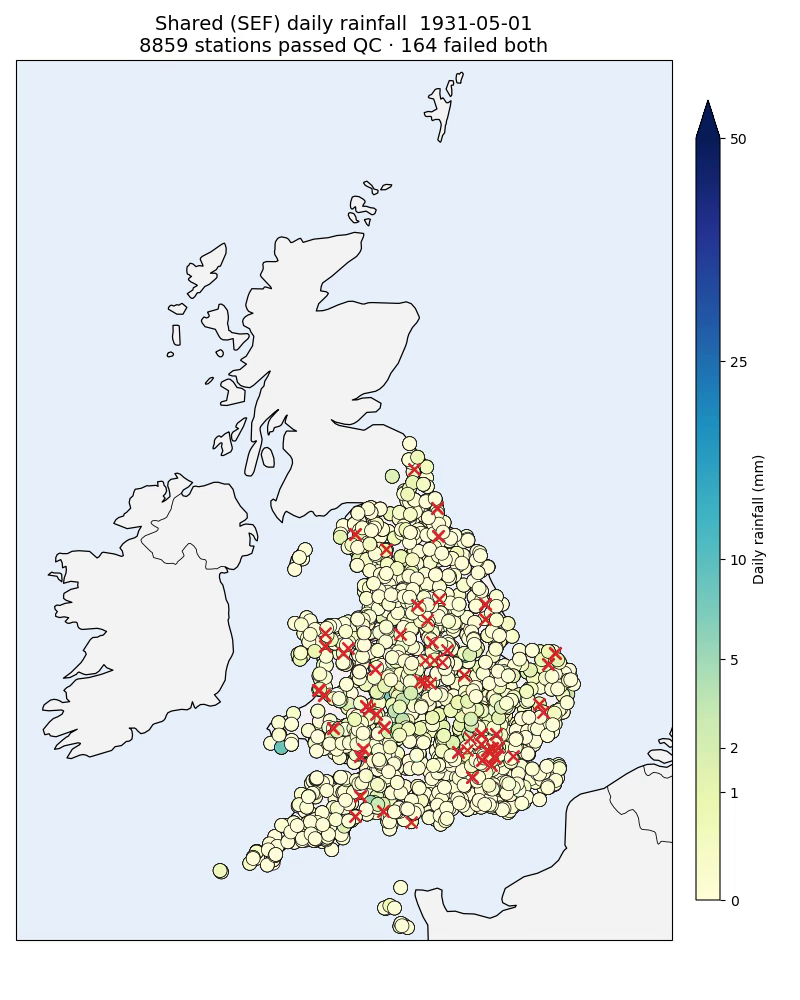

Quality control¶
Now that the daily records are located, we can ask the important question: are the transcribed values right? This stage attaches a quality verdict to every observation using two independent checks.
Three notebooks:
qc_RR_monthly_total.ipynb — QC check 1
qc_RR_regional_stats.ipynb — QC check 2, stage 1
qc_RR_secondary_ml.ipynb — QC check 2, stage 2
The two checks are complementary. QC1 is strict and independent but only covers stations with an exact monthly match; QC2 is a softer, spatial check that re-examines the observations QC1 rejects, so that a single suspect month doesn’t needlessly throw away good days.
QC check 1 — monthly-total consistency¶
The first check uses the station’s own monthly totals as ground truth. For every transcription with an exact rank-1 RR match, it:
recomputes each monthly total from the consensus daily values (the median across members per day),
compares that to the matched RR monthly value, and
flags every day in that file-month as
passif the difference is within tolerance, elsefail.
This is a genuinely independent check: the RR monthly totals were digitised by a completely different process (volunteers reading the monthly sheets), so agreement is strong evidence the daily transcription is correct.
The full dataset has ~514,000 file IDs, so the notebook demonstrates the check on
a slice and submits the rest to the cluster (qc_array + qc_merge):
scripts/slurm/submit_qc.sh
Outputs land in Parquet under qc_root: qc_sessions, daily_qc_results, and
daily_qc_status.
QC check 2 — regional consistency¶
QC1 can only judge stations with an exact monthly match, and it fails a whole month if the total is off. QC check 2 provides a spatial second opinion, focused on the observations QC1 failed. It runs in two stages.
Stage 1 — regional neighbour statistics¶
For every located station-day, qc_RR_regional_stats computes robust statistics from the neighbours that passed QC1 on the same calendar day — the median of their rainfall, the number of such neighbours, and the median absolute deviation — at both 20 km and 50 km. The station itself is always excluded.
This stage has two prerequisites, run in order:
# 1. Build the daily-consensus table first (the per-day ensemble median).
scripts/slurm/submit_daily_consensus.sh
# 2. Compute the regional statistics (reads that table).
scripts/slurm/submit_regional_stats.sh
The consensus median is precomputed once, sharded by file_id, because computing
it inside the regional shards would exhaust memory — a geographically scattered
shard needs consensus values for a near-national set of stations, and DuckDB’s
grouped median() cannot spill to disc. submit_regional_stats.sh refuses to run
until the consensus table exists.
Stage 2 — the secondary ML check¶
qc_RR_secondary_ml turns those regional statistics into a test. Two gradient-boosted (XGBoost) models are trained only on the reliable QC1-pass rows:
Model 1 predicts a station’s own consensus rainfall from its regional statistics.
Model 2 predicts the absolute error of Model 1, giving a per-row expected uncertainty.
A multiplier k is calibrated on a held-out split so that a target fraction
(default 99%) of reliable rows fall inside prediction ± k · predicted_error.
That interval is the expectation range. Each QC1-fail row is then re-judged:
inside the range →
pass(rescued),outside it →
fail(a QC suspect),no usable neighbours →
indeterminate.
Run the two dependent jobs (train, then score) with:
scripts/slurm/submit_secondary_qc.sh
Models land under secondary_qc_root/models/, and the scored flags in
secondary_qc_root/secondary_qc_status/.
Inspecting the verdicts¶
Each QC notebook ends with an interactive Plotly map that colours stations by
their flag for a chosen date — pass/fail for QC1, and
pass/fail/indeterminate for the secondary check. Clicking a station copies
its specifier to the clipboard so you can pull up its full diagnostic.
{kind=link}

The QC verdicts made visible for a single date: stations that passed are drawn with their rainfall value, while those that failed both checks are marked with a red cross and excluded from the field.¶
Next: Export.